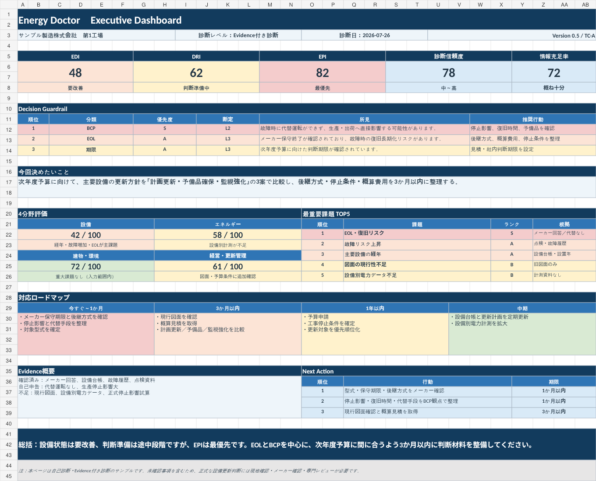

01
何が課題か
設備・エネルギー・建屋・保全・BCPを横断して、優先確認事項を整理します。
Energy Doctor｜事業所投資診断ポータル
設備・エネルギー・建屋・BCPを横断して、
何から投資すべきかを見える化する。
工場・事務棟・研究所・物流センターなど、事業所全体を俯瞰して課題を整理し、投資判断の優先順位をご提案します。
分からない項目は「不明」で回答できます。
WHAT YOU GET
Energy Doctorは、単なる省エネ診断ではありません。課題を見つけ、優先順位を付け、次の行動まで整理します。
設備・エネルギー・建屋・保全・BCPを横断して、優先確認事項を整理します。
優先課題TOP5と投資判断レーダーで、確認・投資の優先順位を見える化します。
資料確認、現地調査、基本構想、概算見積など、次の検討ステップまで整理します。

SAMPLEA3 REPORT
課題を並べるだけでは、投資判断はできません。Energy Doctorでは「何が問題か」「何から着手すべきか」「次に何を確認すべきか」まで、経営層が把握しやすい形に整理します。
INVESTMENT RADAR
設備だけ、電気代だけ、建屋だけ。それぞれを個別に見るのではなく、事業所全体を俯瞰することで投資の順番が見えてきます。
ENERGY DOCTOR CYCLE
見える化 → 診断 → 優先順位 → 投資判断 → 実行 → 効果確認を循環させ、次の投資判断につなげます。
FROM DIAGNOSIS TO SOLUTION
Energy Doctorは、製品を販売するための診断ではありません。まず課題と優先順位を整理し、必要な場合に具体的な解決策を検討します。
STORY
設備更新、省エネ、建屋修繕、BCP。それぞれの提案はできても、経営者が本当に知りたいのは「結局、何から投資すべきなのか」ではないか。
Energy Doctorは、その問いを出発点にしています。設備や建物を個別に見るのではなく、事業所全体を俯瞰し、課題を共通の物差しで整理して、判断できる形にする。そのための診断プラットフォームとして企画しました。
本サービスは、澤電気機械の企業内中小企業診断士が、設備・エネルギーの現場経験と経営診断の視点を組み合わせて企画・設計しています。
ENERGY DOCTOR CHARTER
01｜全体を見る。
設備単体ではなく、事業所全体から課題を捉えます。
02｜根拠を分ける。
確認できた事実と、追加確認が必要な事項を区別します。
03｜売る前に判断する。
特定製品ありきではなく、投資の必要性と順序を先に考えます。
04｜行動につなげる。
診断で終わらず、次に何を確認・実行するかまで整理します。
FAQ
初期の簡易診断とA3レポートは無償です。現地調査、詳細診断、設計、工事、機器提案等は別途ご相談します。
時間制限は設けていません。分からない項目は「不明」を選択でき、必要な情報はその後の個別確認で補います。
公開フォームにはファイル添付機能を設けません。必要な場合は受付後に提出方法をご案内します。
採点・重大事項・優先順位は承認済みの診断ルールで算定し、正式なレポートは担当者が確認して発行します。
START DIAGNOSIS
設備・エネルギー・建屋・BCPを横断して、投資判断の優先順位を整理します。
無料診断を開始する分からない項目は「不明」で回答できます。